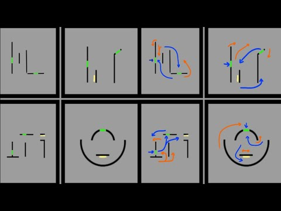

How to Loop Using the Build
In Dead by Daylight, mastering loops is a crucial skill. There are two types of sides in each loop: the strong side and the weak side. Knowing when and where to position yourself on these sides can make all the difference in escaping the killer!
Example of Loops
Weak and Strong Sides Explained:
- The strong side: It contains a vault or window that allows you to evade the killer's attacks.
- The weak side: It lacks a vault or window, making it difficult to loop.
- Position yourself: Always try to position yourself on the strong side of the loop. This will give you an advantage over the killer.
- Look for every opportunity to mindgame the killer— and anticipate their moves for being ready to react!
Pro Tip: Stay aware of your surroundings, and always keep an eye on the killer's position. If the killer tries to double back on you, be ready to adapt!